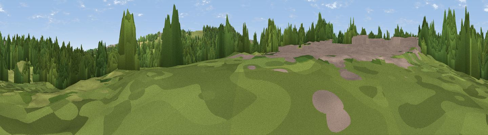

Ganderland 2
#46122 in England · top 99% of its area beats it · near PenshawWhere it is
The exact computed spot (NZ 33155 56018). Click the marker for map links.
The view, rendered

A 360° render of this exact spot computed from the terrain model, tree cover and land cover — summer colours, afternoon light, calibrated against photographs of famous viewpoints. Real trees, hedges and buildings will differ in detail.
The panorama
Grey silhouette: terrain skyline in each direction (720 bearings, Earth curvature and refraction included). Dashed green: skyline with trees (+15 m) and buildings (+8 m) as obstacles. Blue strip: how far the ground is visible on each bearing.
Where the view opens
Wedge length = distance to the farthest visible ground on that bearing (vegetation-aware). Rings at 10, 25 and 50 km.
What fills the view
55% woodland · 34% grassland · 7% built-up · 3% cropland · 1% water
Angular shares of the visible panorama (visual magnitude), not map area. Landscape diversity 0.45 (0–1 Shannon).
Key numbers
More beautiful places nearby
The staircase of upgrades: each row has a higher view potential than everything closer. Driving times are estimates from straight-line distance, calibrated against real road routing — check an actual route before setting out.
| Place | Direction | Drive | Score |
|---|---|---|---|
| Penshaw Hill | S · 2 km | ~5 min | 75.1 |
| Viewpoint near Houghton-le-Spring | SE · 7 km | ~14 min | 76.0 |
| Viewpoint near Sunniside | W · 11 km | ~21 min | 77.6 |
| Pontop Pike | W · 18 km | ~32 min | 77.8 |
| Viewpoint near Lazenby | SSE · 44 km | ~65 min | 86.4 |
| Warsett Hill | SE · 50 km | ~71 min | 86.8 |
| Viewpoint near Easington | SE · 55 km | ~76 min | 90.2 |
| The Knoll | S · 475 km | ~439 min | 91.0 |
54.89780, -1.48455 · source: osm viewpoint · position refined by local search. Computed location — check access rights before visiting.